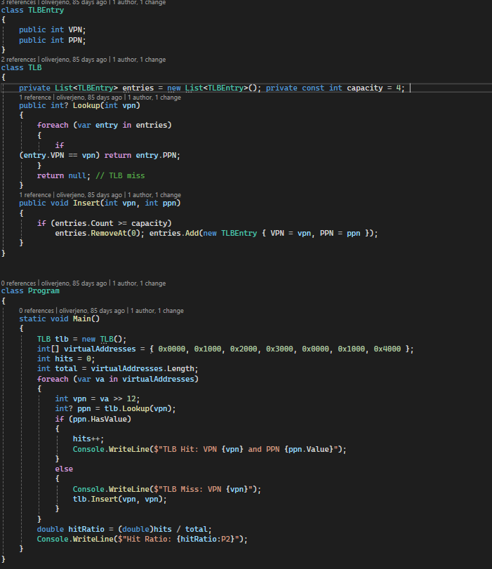
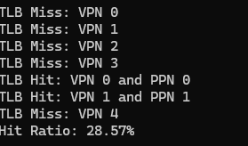
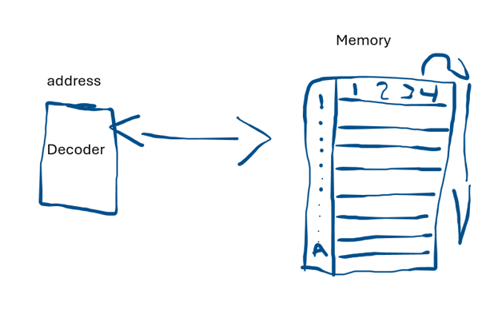
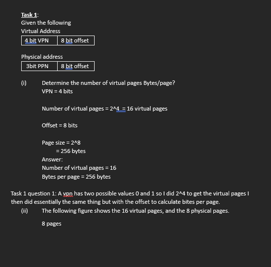
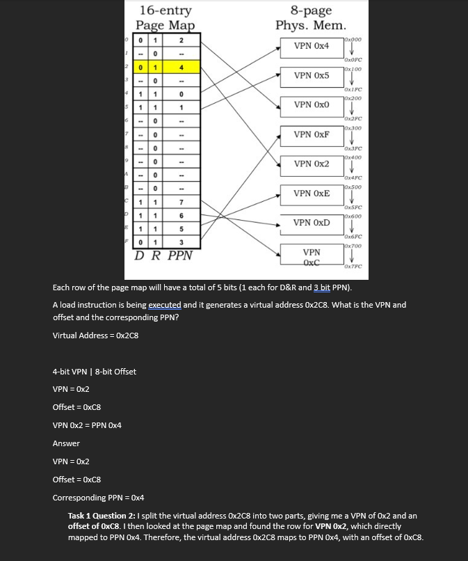
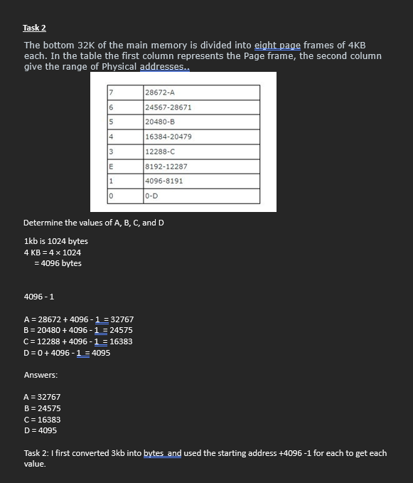
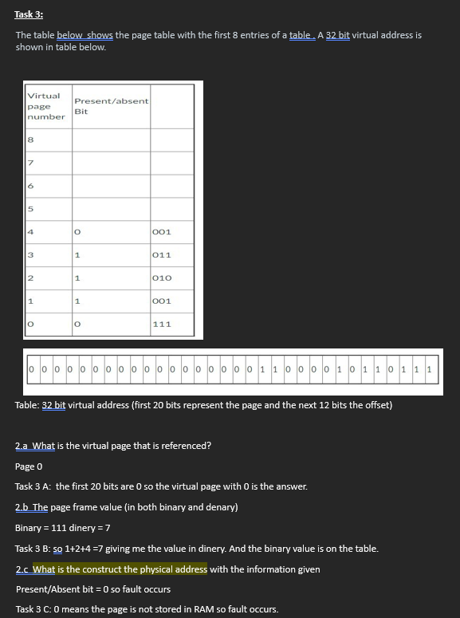
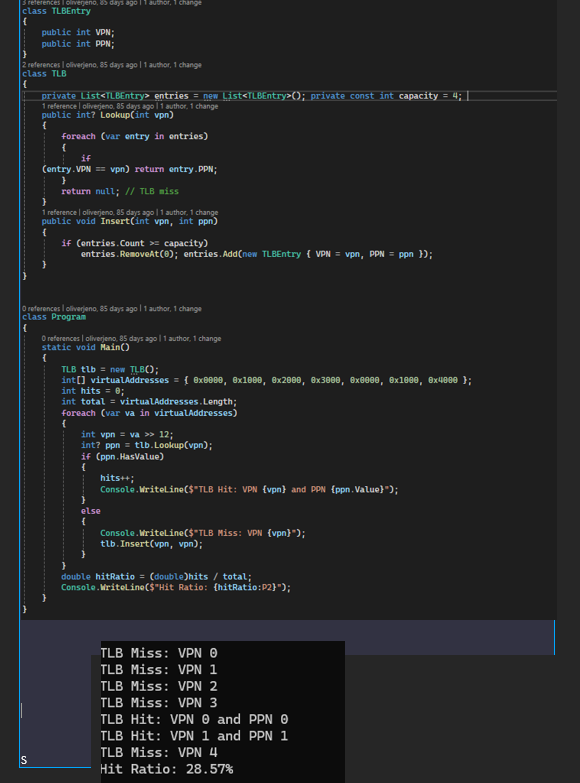
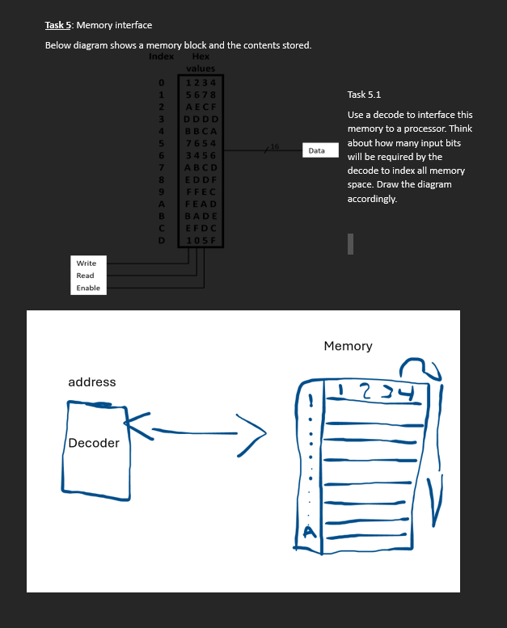
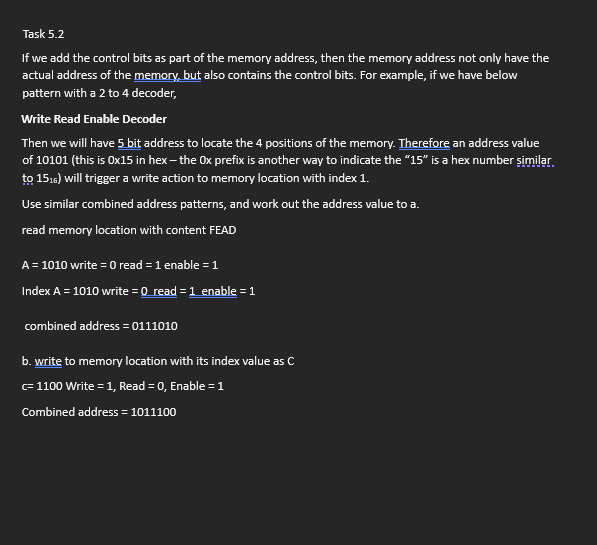

(screenshots will be added at the end of the lab)
Task 1 (i)
Given the following:
Virtual Address:
4-bit VPN | 8-bit Offset
Physical Address:
3-bit PPN | 8-bit Offset
Determine the number of virtual pages and the number of bytes per page.
Working:
VPN = 4 bits
Number of virtual pages = 24
= 16 virtual pages
Offset = 8 bits
Page size = 28
= 256 bytes
Answer:
Number of virtual pages = 16
Bytes per page = 256 bytes
Task 1 Question 1: A VPN has two possible values, 0 and 1, so I did 24 to get the number of virtual pages. I then did essentially the same thing with the offset to calculate the number of bytes per page.
Task 1 (ii)
The following figure shows the 16 virtual pages and the 8 physical pages.
Each row of the page map contains 5 bits (1 bit each for the Dirty and Resident bits, and a 3-bit Physical Page Number).
A load instruction generates the virtual address 0x2C8. Determine the VPN, the offset and the corresponding PPN.
Working:
Virtual Address = 0x2C8
4-bit VPN | 8-bit Offset
VPN = 0x2
Offset = 0xC8
VPN 0x2 = PPN 0x4
Answer:
VPN = 0x2
Offset = 0xC8
Corresponding PPN = 0x4
Task 1 Question 2: I split the virtual address 0x2C8 into two parts, giving me a VPN of 0x2 and an offset of 0xC8. I then looked at the page map and found the row for VPN 0x2, which directly mapped to PPN 0x4. Therefore, the virtual address 0x2C8 maps to PPN 0x4, with an offset of 0xC8.
Task 2
The bottom 32 KB of the main memory is divided into eight page frames of 4 KB each. In the table, the first column represents the page frame and the second column shows the range of physical addresses.
Determine the values of A, B, C and D.
Working:
1 KB = 1024 bytes
4 KB = 4 × 1024
= 4096 bytes
To calculate the final address in each page frame, I used:
End address = Starting address + 4096 - 1
A = 28672 + 4096 - 1
A = 32767
B = 20480 + 4096 - 1
B = 24575
C = 12288 + 4096 - 1
C = 16383
D = 0 + 4096 - 1
D = 4095
Answer:
A = 32767
B = 24575
C = 16383
D = 4095
Task 2: I first converted 4 KB into bytes and used the starting address plus 4096 minus 1 for each page frame to calculate the final address. I used minus 1 because the starting address is already counted as the first byte in the page frame.
Task 3
The table below shows the first eight entries of a page table and a 32-bit virtual address. The first 20 bits represent the virtual page number and the remaining 12 bits represent the offset.
2.a What is the virtual page that is referenced?
Working:
The first 20 bits of the virtual address are all 0.
Virtual Page = 0
Answer:
Virtual Page = 0
Task 3 Question 2.a: I looked at the first 20 bits of the virtual address because these bits represent the virtual page number. Since all 20 bits were 0, the referenced virtual page is 0.
2.b What is the page frame value (in both binary and denary)?
Working:
Virtual Page 0 → Page Frame = 111
111₂ = 7₁₀
Answer:
Binary = 111
Denary = 7
Task 3 Question 2.b: I used the virtual page number from part 2.a and looked at row 0 in the page table. The page frame value was 111 in binary. I converted this to denary by adding 4 + 2 + 1, giving 7.
2.c Construct the physical address with the information given.
Working:
Present/Absent bit = 0
0 means the page is not stored in RAM.
Therefore, a page fault occurs.
Answer:
Page Fault
Task 3 Question 2.c: I looked at the Present/Absent bit in the page table. Since the value was 0, the page was not stored in RAM. Because the page was not present in physical memory, a page fault occurred.
Task 4.1
A computer has a virtual memory size of 232 bytes and a physical memory size of 224 bytes. The page size is 210 bytes. Calculate:
(i) The number of page frames in physical memory.
(ii) The number of entries in the page table.
(iii) The number of bits required for each page table entry (excluding dirty and reference bits).
(iv) The total size of the page table.
Working:
(i)
Number of page frames = 224 ÷ 210
= 214
= 16,384 page frames
(ii)
Number of virtual pages = 232 ÷ 210
= 222
= 4,194,304 entries
(iii)
Physical Page Number bits = 24 − 10
= 14 bits
Present/Absent bit = 1
Total = 14 + 1
= 15 bits
(iv)
Page table size = 4,194,304 × 15
= 62,914,560 bits
62,914,560 ÷ 8
= 7,864,320 bytes
7,864,320 ÷ 1024
= 7,680 KB
Answer:
(i) 16,384 page frames
(ii) 4,194,304 page table entries
(iii) 15 bits per entry
(iv) 7,680 KB
Translation Lookaside Buffer (TLB) Simulation
1. Simulate TLB hits and misses.
2. Track the hit ratio after a sequence of address translations

Task 5.1
Draw a block diagram to show how a decoder can be used to select one of 16 memory locations.
Working:
The 4-bit address is sent into the decoder. The decoder then activates one of 16 select lines, with each select line connected to a different memory location.
Answer:

If we add the control bits as part of the memory address, then the memory address not only has the actual address of the memory but also contains the control bits. For example, if we have the pattern below with a 2 to 4 decoder:
Write Read Enable Decoder
Then we will have a 5-bit address to locate the 4 positions of the memory. Therefore, an address value of 10101 (this is 0x15 in hexadecimal) will trigger a write action to the memory location with index 1.
Use similar combined address patterns and work out the address value for the following:
Working:
A = 1010
Write = 0
Read = 1
Enable = 1
Index A = 1010
Write = 0
Read = 1
Enable = 1
Combined address = 0111010
Answer:
0111010
Working:
C = 1100
Write = 1
Read = 0
Enable = 1
Combined address = 1011100
Answer:
1011100
task 1


task 2

task 3

task 4

task 5

task 5.2
